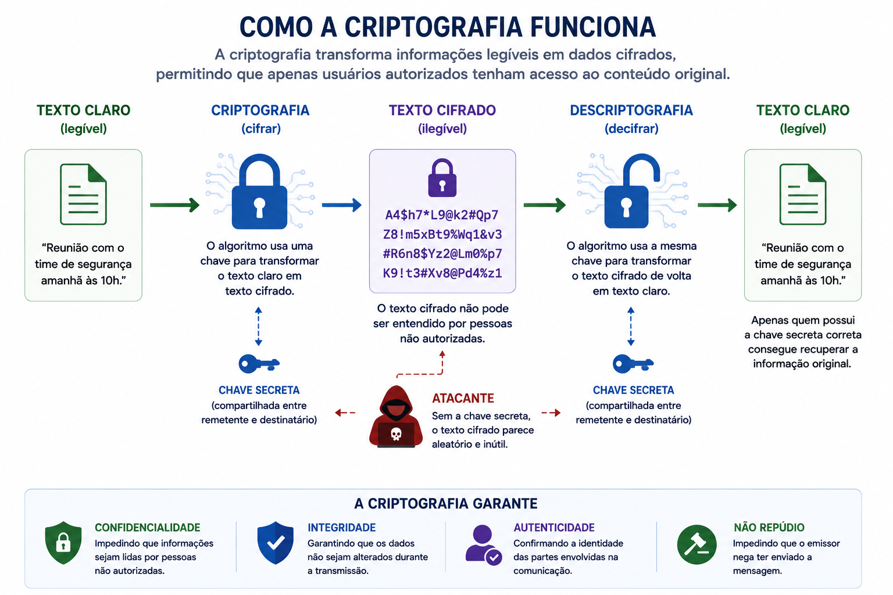
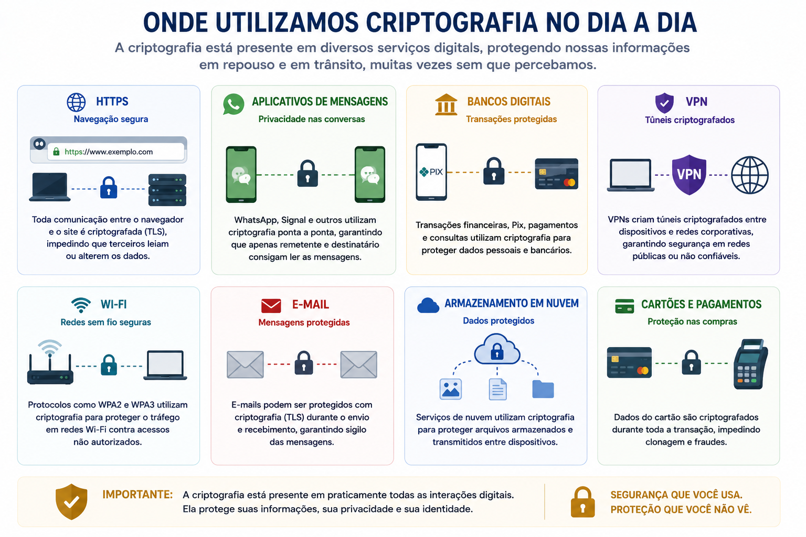
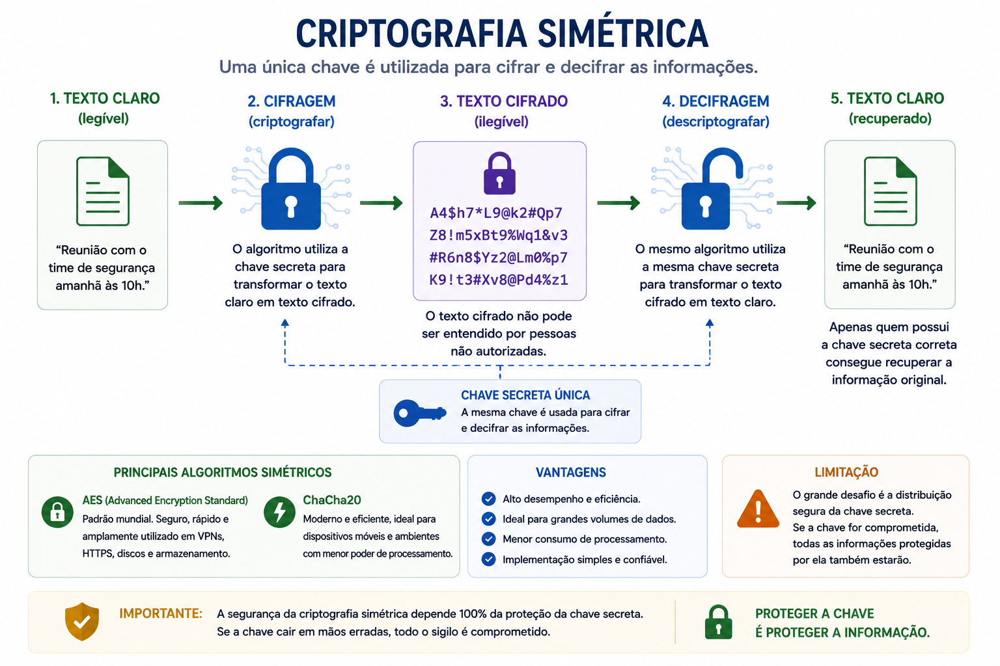
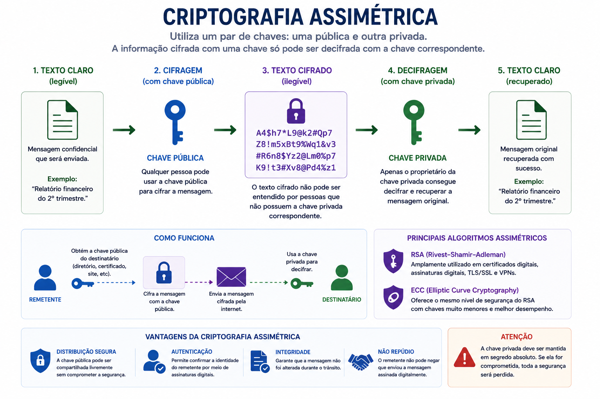
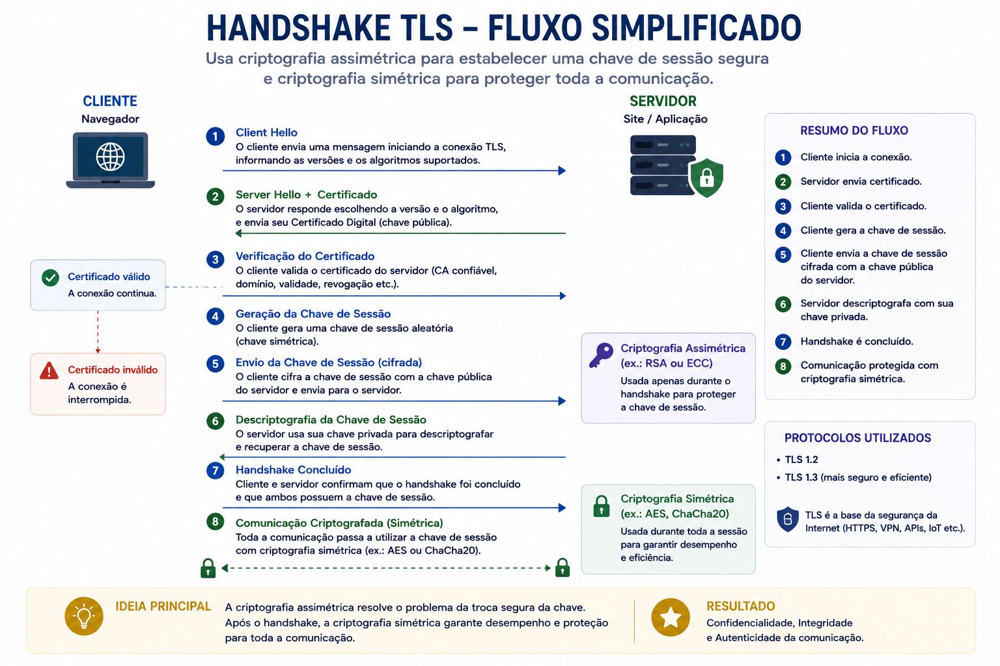
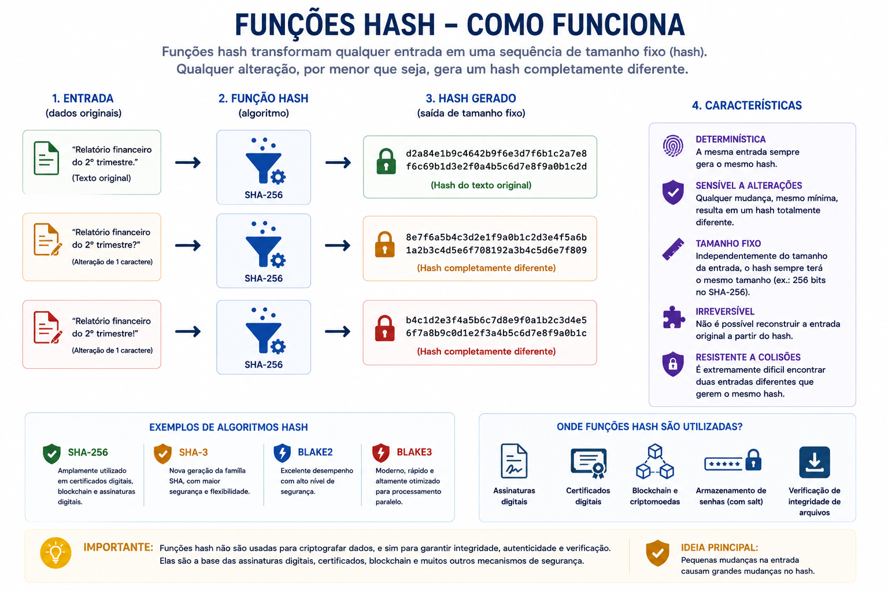
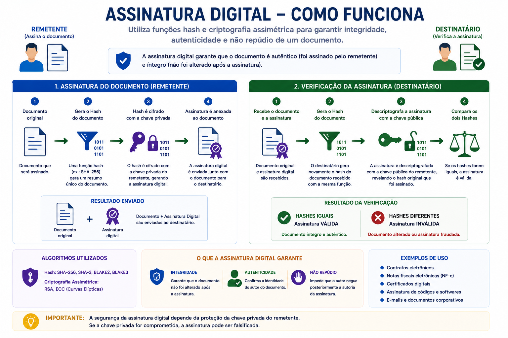
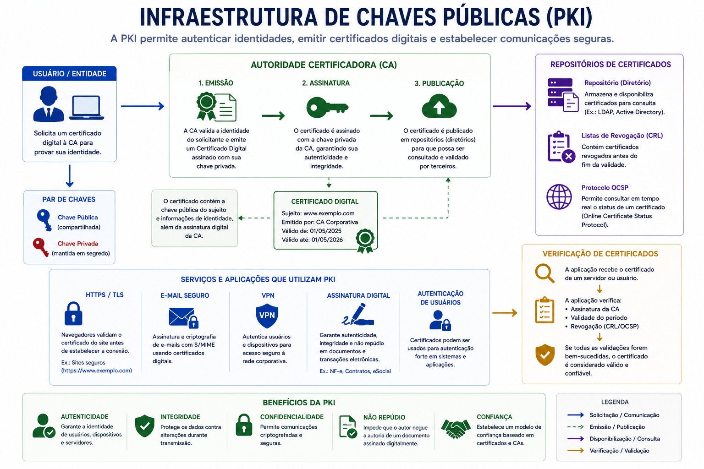
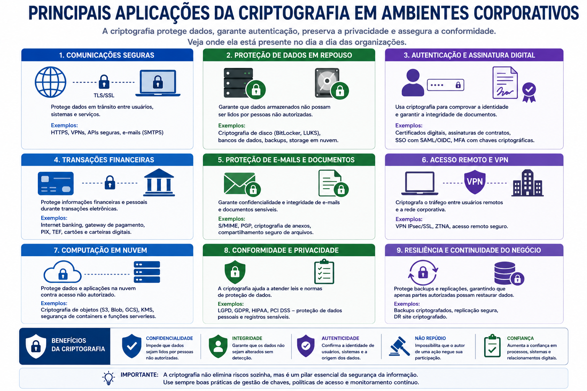
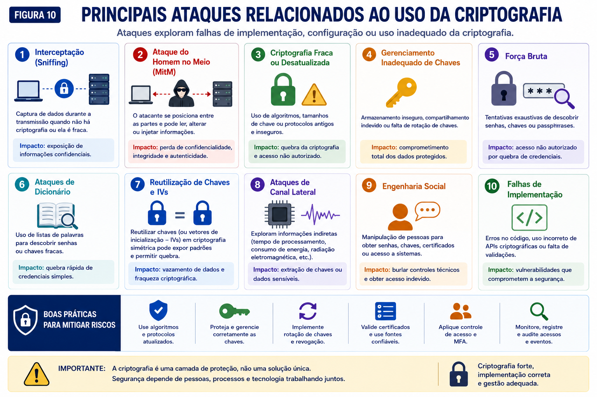

📋 Guia Rápido
RSA
ECC
Hash
PKI
TLS
Certificados Digitais
📖 Resumo Executivo
Imagine enviar uma mensagem contendo informações bancárias por meio da Internet. Durante o percurso, diversos equipamentos intermediários participam da comunicação até que a mensagem alcance seu destino.
Sem mecanismos de proteção, qualquer pessoa que consiga interceptar esse tráfego poderá visualizar seu conteúdo, alterar informações ou até assumir a identidade de um dos participantes da comunicação.
A Criptografia surgiu exatamente para resolver esse problema. Ela transforma informações legíveis em dados cifrados, garantindo que apenas pessoas autorizadas consigam compreender o conteúdo original.
Grande parte da segurança existente na Internet depende da Criptografia.
Sempre que acessamos um site HTTPS, realizamos uma transação financeira, utilizamos um aplicativo de mensagens ou conectamos uma VPN, algoritmos criptográficos trabalham em segundo plano protegendo nossas informações.
Apresentar os principais conceitos da Criptografia, compreender como funcionam os algoritmos criptográficos mais utilizados e entender de que forma essa tecnologia contribui para preservar a Confidencialidade, a Integridade e a Autenticidade das informações.
🔐 O que é Criptografia?
Criptografia é a ciência responsável por proteger informações por meio de técnicas matemáticas que transformam dados legíveis (texto claro) em informações aparentemente aleatórias (texto cifrado).
Somente quem possui a chave criptográfica correta consegue reverter esse processo e recuperar a informação original.
Embora sua origem remonte à Antiguidade, a Criptografia moderna é baseada em algoritmos matemáticos extremamente complexos, capazes de proteger bilhões de transações realizadas diariamente em todo o mundo.

Criptografia não significa esconder informações, mas protegê-las por meio de algoritmos matemáticos que tornam sua leitura praticamente impossível sem a chave adequada.
🌎 Onde Utilizamos Criptografia?
Mesmo sem perceber, utilizamos Criptografia diversas vezes ao longo do dia. Ela está presente em praticamente todos os serviços digitais modernos.

🔑 Criptografia Simétrica
A Criptografia Simétrica é o modelo mais antigo e também um dos mais rápidos utilizados atualmente. Nesse método, a mesma chave é utilizada tanto para cifrar quanto para decifrar as informações.
Isso significa que remetente e destinatário precisam conhecer e proteger exatamente a mesma chave criptográfica. Caso essa chave seja comprometida, todas as informações protegidas por ela poderão ser acessadas.
Por apresentar excelente desempenho, esse modelo é amplamente empregado para proteger grandes volumes de dados, discos, backups, VPNs e conexões HTTPS após o estabelecimento da sessão.

🔐 Criptografia Assimétrica
Para resolver o problema do compartilhamento de chaves surgiu a Criptografia Assimétrica, também conhecida como criptografia de chave pública.
Nesse modelo cada usuário possui duas chaves matematicamente relacionadas:
- 🔓 Chave Pública
- 🔒 Chave Privada
A chave pública pode ser distribuída livremente para qualquer pessoa, enquanto a chave privada deve permanecer protegida pelo proprietário.
Uma informação cifrada utilizando a chave pública somente poderá ser decifrada utilizando sua respectiva chave privada.

🤝 Criptografia Híbrida
Na prática, a maior parte das aplicações modernas utiliza uma combinação entre criptografia simétrica e assimétrica.
Esse modelo é conhecido como Criptografia Híbrida e reúne as principais vantagens de ambos os métodos.
Inicialmente, algoritmos assimétricos realizam a autenticação entre as partes e estabelecem uma chave de sessão segura. Após essa etapa, toda a comunicação passa a utilizar criptografia simétrica, muito mais rápida e eficiente.

Quando você acessa um site HTTPS, seu navegador utiliza criptografia assimétrica apenas durante os primeiros instantes da conexão. Após a negociação da chave de sessão, toda a troca de informações passa a utilizar algoritmos simétricos como o AES, proporcionando muito mais desempenho.
#️⃣ Funções Hash
Ao estudar Criptografia é comum acreditar que todas as técnicas servem para ocultar informações. Entretanto, existe uma categoria de algoritmos cujo objetivo é completamente diferente.
As funções Hash não foram desenvolvidas para criptografar dados, mas para produzir uma representação matemática única de uma informação. Esse valor, conhecido como Hash, funciona como uma impressão digital do conteúdo original.
Sempre que uma informação sofre qualquer alteração, mesmo que apenas um único caractere seja modificado, um novo Hash é gerado, completamente diferente do anterior.

Hash não é criptografia reversível. Não existe um processo para recuperar o conteúdo original a partir do valor Hash.
✍ Assinaturas Digitais
As Assinaturas Digitais utilizam funções Hash e criptografia assimétrica para garantir que uma informação realmente foi produzida pelo seu autor e que não sofreu alterações durante a transmissão.
Primeiramente é calculado o Hash do documento. Em seguida, esse Hash é cifrado utilizando a chave privada do remetente.
Ao receber o documento, o destinatário calcula novamente o Hash do arquivo e compara esse resultado com o Hash recuperado por meio da chave pública do emissor.
Se ambos os valores forem iguais, é possível concluir que o arquivo permanece íntegro e que foi assinado pelo proprietário da chave privada correspondente.

🏛 Infraestrutura de Chaves Públicas (PKI)
Em ambientes corporativos seria inviável cada organização criar e distribuir suas próprias chaves públicas sem qualquer mecanismo de validação.
Para resolver esse problema foi criada a Infraestrutura de Chaves Públicas, conhecida internacionalmente como PKI (Public Key Infrastructure).
Nesse modelo, Autoridades Certificadoras (CAs) emitem Certificados Digitais que associam uma identidade a uma chave pública, permitindo que navegadores, sistemas operacionais e aplicações verifiquem automaticamente a autenticidade dessa informação.

Sempre que o navegador exibe o cadeado ao lado da URL de um site, há um Certificado Digital válido sendo utilizado para autenticar o servidor e estabelecer uma comunicação criptografada.
💼 Aplicações Práticas da Criptografia
Embora muitas pessoas associem a Criptografia apenas ao acesso de sites HTTPS, sua utilização está presente em praticamente todos os ambientes modernos de Tecnologia da Informação.
Empresas utilizam mecanismos criptográficos para proteger comunicações, armazenar informações sensíveis, autenticar usuários e preservar a confidencialidade dos dados durante todo o seu ciclo de vida.

⚠ Principais Ataques Relacionados à Criptografia
Apesar da robustez dos algoritmos modernos, diversos ataques buscam explorar implementações incorretas, falhas de configuração ou o comprometimento das chaves criptográficas.
Na maioria das situações, o problema não está no algoritmo, mas na forma como ele foi implementado ou administrado.

• Utilizar AES-256 para criptografia simétrica.
• Preferir TLS 1.3 sempre que possível.
• Utilizar algoritmos modernos como SHA-256 ou SHA-3.
• Proteger adequadamente as chaves privadas.
• Implementar rotação periódica de chaves.
• Utilizar certificados digitais emitidos por Autoridades Certificadoras confiáveis.
• Desabilitar protocolos criptográficos obsoletos.
• Implementar HSM para proteção de chaves críticas.
• Utilizar MD5 para proteger senhas.
• Armazenar chaves privadas em texto claro.
• Utilizar certificados expirados.
• Compartilhar chaves entre diferentes aplicações.
• Utilizar TLS 1.0 ou SSL.
• Não validar certificados digitais.
• Ignorar atualizações criptográficas.
📚 O que aprendemos?
- O conceito de Criptografia.
- Onde a Criptografia é utilizada no dia a dia.
- As diferenças entre criptografia simétrica e assimétrica.
- Como funciona a criptografia híbrida.
- O papel das funções Hash.
- Como funcionam as Assinaturas Digitais.
- Os conceitos básicos da Infraestrutura de Chaves Públicas (PKI).
- As principais aplicações da Criptografia.
- Os ataques mais comuns relacionados aos mecanismos criptográficos.
- As principais boas práticas para utilização da Criptografia.
🚀 Próximo Capítulo
Agora que compreendemos como a Criptografia protege informações, vamos estudar quem pode acessá-las.
No próximo capítulo conheceremos os fundamentos do Controle de Acesso, responsável por definir quais usuários podem visualizar, modificar ou administrar os recursos de uma organização.
Estudaremos conceitos como autenticação, autorização, identidades digitais, RBAC, ABAC, DAC, MAC, MFA e os princípios do Menor Privilégio e Need to Know.
➡ Ler o próximo capítulo
✅ 🔺 Tríade CIA
✅ 🔒 Confidencialidade
✅ 🛡 Integridade
✅ ⚡ Disponibilidade
✅ 🔐 Criptografia
➡ 👥 Controle de Acesso
⬜ 🪪 Autenticação
⬜ 🏷 Classificação da Informação
⬜ 🏛 Governança de Segurança